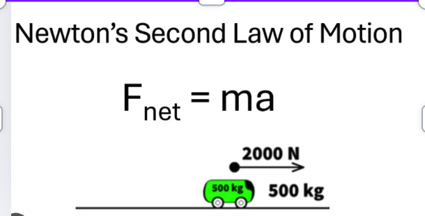

This experiment investigates how surface texture and friction affect the motion of a rolling ball. When an object rolls down a ramp, its speed is influenced by the amount of friction between the ball and the surface.
Different textures create different levels of friction, which can either slow the ball down or allow it to move faster.
By measuring the time it takes for balls with different textures to reach the ground, we can compare how friction changes motion.
Repeating the experiment multiple times (5 times) improves accuracy and reduces random errors.
This experiment uses Newton’s Second and Third Laws of Motion.
Friction is a force that occurs when two surfaces interact, which is related to Newton’s Third Law (action and reaction).
Secondly, the experiment mainly uses Newton’s Second Law:
F = ma
In this law, acceleration depends on gravity and friction, while the net force is determined by mass and acceleration. We made mass the same so the force is only depending on is acceleration which is determined by changing texture of balls
